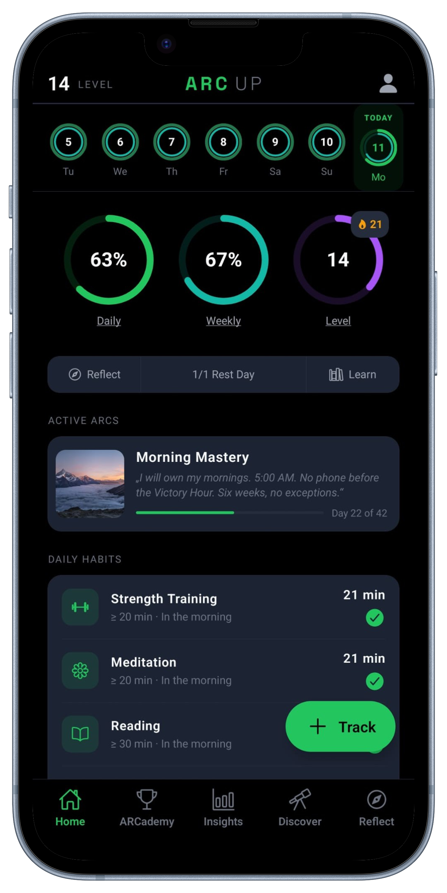
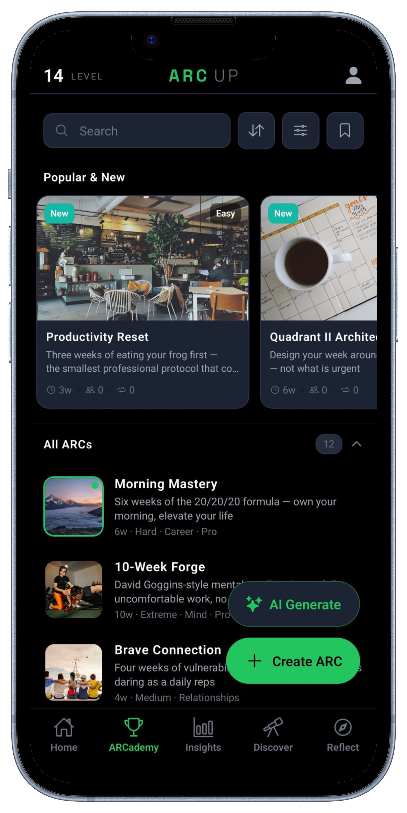
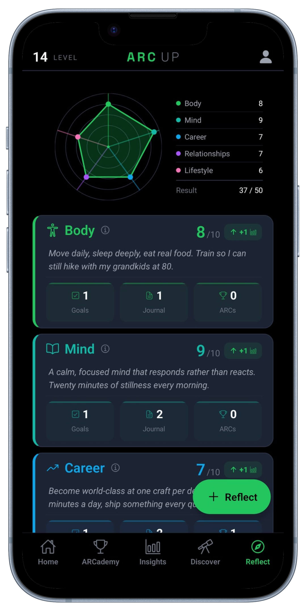
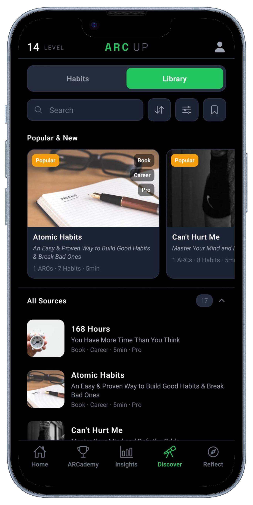

Baseline
Vierzehn Tage ehrliches Tracking — sieh dich selbst, bevor du dich änderst.
- Mood Check-In · 1×/Tag
- Sleep ≥ 7 h
- Water Intake ≥ 1,5 l
- Steps ≥ 4.000
- Compass Review · 1×/Woche
Verbinde deine langfristige Vision mit dem, was du heute tust.



Andere fragen: „Hast du heute Sport gemacht?" ArcUp fragt: „Wie viele Kilometer? Wie viele Minuten? Wie schnell?" — und alles, was du einträgst, bleibt messbar.
Binär. Keine Tiefe. Erfüllung = 100 % oder 0 %.
Echte Werte. Proportionale Erfüllung. Roll-up im Insights.
Gewohnheiten sind keine Freitext-Notizen. Jede Gewohnheit hat einen Zielwert, eine Richtung (≥ oder ≤) und eine Einheit.
Echte Verhaltensänderung passiert in fokussierten Phasen. Ein ARC ist eine Verpflichtung über 1 bis 12 Wochen — kein endloser Streak.
Jede Empfehlung beruht auf einer belegbaren Quelle — Buch, Studie, Vortrag oder eigene Recherche. Wir behaupten nichts, was wir nicht stützen können.
Ziele wachsen linear über die ARC-Dauer — von 1 auf 5 km, von 5 auf 20 Minuten. Wachstum passiert durch Steigerung, nicht durch Wiederholung.
Drei reale ARCs aus der Sammlung — jeweils mit Dauer, Lebensbereich und den Gewohnheiten, die du tatsächlich trackst.
Vierzehn Tage ehrliches Tracking — sieh dich selbst, bevor du dich änderst.
Drei Wochen, um die eine Gewohnheit in den Griff zu bekommen, auf der alle anderen aufbauen.
Stille als bewusste tägliche Praxis — drei Wochen, in denen sie zum Normalzustand wird.
Drei Ebenen, vier Tabs — jeder erfüllt genau eine Aufgabe. Keine überladenen Screens, keine Multifunktions-Buttons.
Drei Ringe für Tag, Woche und Level. Eine Liste deiner heutigen Gewohnheiten — mit dem konkreten Zielwert, nicht mit einer Checkbox. Aktive ARCs zeigen, wo du gerade stehst.
Eine kuratierte Sammlung von ARCs zwischen 1 und 12 Wochen. Schwierigkeit, Lebensbereich, Quelle, Dauer — alles filterbar. Plus zwei Wege, eigene Pfade zu gehen.
Discover hat zwei Tabs — Lerninhalte und Gewohnheiten. Im Lerninhalte-Tab steht hinter jeder Gewohnheit und jedem ARC ein redaktionelles Briefing: selbst geschrieben, in 4 bis 8 Minuten lesbar, direkt verknüpft.

Der zweite Discover-Tab: über 120 kuratierte Gewohnheiten, sauber in Ober- und Unterkategorien strukturiert. Du trackst „Long Run = 12 km" — die Insights summieren das automatisch unter Laufen und Ausdauertraining mit.
Bewerte deine fünf Lebensbereiche von 1 bis 10. Sieh, wo Balance fehlt. Schreibe Vision, Ziele und Journal — paginiert, durchsuchbar, jederzeit editierbar.
Jede Quelle, jeder Habit und jeder ARC gehört zu genau einem Lebensbereich. Das hält den Fokus klar und verhindert „passt-überall"-Inhalte.
Ausdauer, Kraft, Mobility, Schlaf, Ernährung, Recovery.
Was trägt dich durch dein Leben?
Meditation, Fokus, Stress-Regulation, Resilienz.
Wer bist du, wenn es leise wird?
Lesen, Lernen, Deep Work, Karriere, Finanzen.
Was lernst du, das dich verändert?
Partnerschaft, Familie, Freunde, Netzwerk, Repair.
Wer wird dich vermissen, wenn du fehlst?
Hobbys, Natur, Kreativität, Spiel, Digital Detox.
Was tust du, wenn niemand zusieht?
Genauso wichtig wie die Features: was nicht in der App ist — und warum.
Gewohnheiten sind keine Aufgaben mit Deadline. Ziele haben einen eigenen Platz.
Nicht „heute Sport gemacht ja/nein". Sondern „heute 5,2 km gelaufen". Numerisch, immer.
Keine Follower, keine Likes, keine Posts. Deine Insights sind privat.
Streaks gibt es, aber Rest-Days sind eingebaut. Es gibt keine Streak-Shields.
Voller ZIP-Export deiner Daten jederzeit. Konto-Reset und -Löschung mit einem Tap. Deine Daten gehören dir.
Keine Werbung, keine Tracker, kein Notification-Spam. EU-Hosting, DSGVO.
Alle Kernfunktionen sind kostenlos. Pro schaltet die Tiefe frei — mehrere parallele ARCs, Insights mit Habit-Korrelationen, Journal, Ziele und KI-Generator.
Für immer kostenlos.
Alle Features. Drei Wege, Pro zu bekommen.
ArcUp ist mein Versuch, ein System für persönliche Entwicklung zu bauen, das hält, was es verspricht — strukturiert, numerisch, durchdacht. Kein Streak-Casino, kein Social-Feed, kein Notification-Spam.
Solo gebaut, in Österreich. Kein VC, keine Werbung, keine Tracker. Wenn dir etwas fehlt oder du einen Bug findest: das Feedback-Formular in der App landet direkt bei mir.
Hör auf, Häkchen zu sammeln. Fang an, dich wirklich zu sehen.